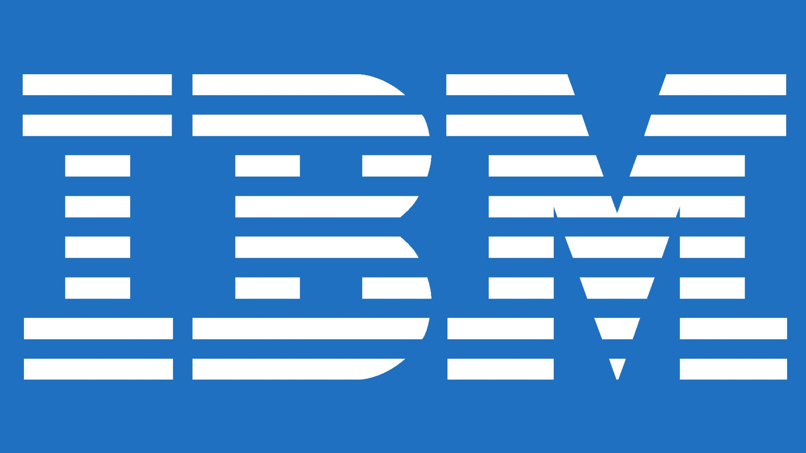
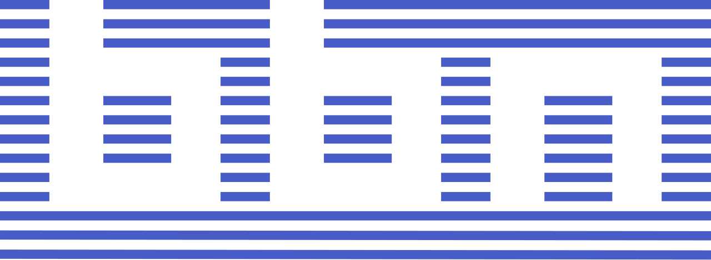
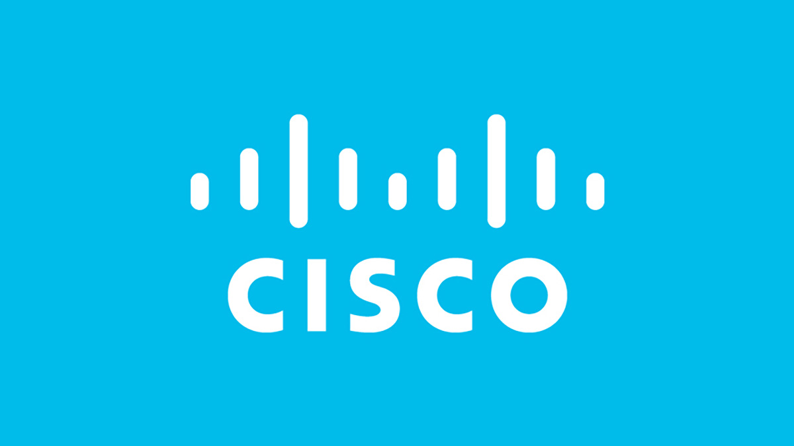

Pessoas Importantes Para o Desenvolvimento da Internet (Além de Tim Berners-Lee)
Vinton Cerf e Robert Kahn: Considerados os "pais da internet", desenvolveram os protocolos TCP/IP, que
fundamentam a comunicação na internet.
J.C.R. Licklider: Pesquisador do MIT que previu a rede de computadores interconectados e liderou o
programa de pesquisa na DARPA, agência do governo dos EUA que originou a ARPANET.
Larry Page e Sergey Brin: Fundadores do Google, criaram o mecanismo de busca que organizou as
informações da internet.
Hedy Lamarr: Atriz e inventora que criou uma tecnologia de comunicação pioneira, base para o Wi-Fi, GPS
e Bluetooth.
Alan Turing: Pioneiro na ciência da computação, fundamental para o desenvolvimento dos computadores
modernos.
Empresas Relevantes Nesse Processo
IBM: Contribuiu com tecnologias como Ethernet e TCP/IP, essenciais para a infraestrutura da internet.

Netscape: Lançou o navegador Mosaic, que melhorou a acessibilidade à web e popularizou o uso do
protocolo HTTP.
Google: Revolucionou a busca na internet com seu sistema de busca baseado em relevância e algoritmos
inteligentes.

BBN Technologies (Bolt, Beranek and Newman): Empresa crucial que construiu os "IMPs" (Interface Message
Processors), os primeiros roteadores, essenciais para a ARPANET.

Cisco Systems: Pioneira no desenvolvimento e comercialização de roteadores e switches de alta
velocidade, fundamentais para a expansão da rede mundial nos anos 80 e 90.

O desenvolvimento da internet foi uma construção coletiva que uniu visão teórica, engenharia militar e
faro comercial.
Voltar